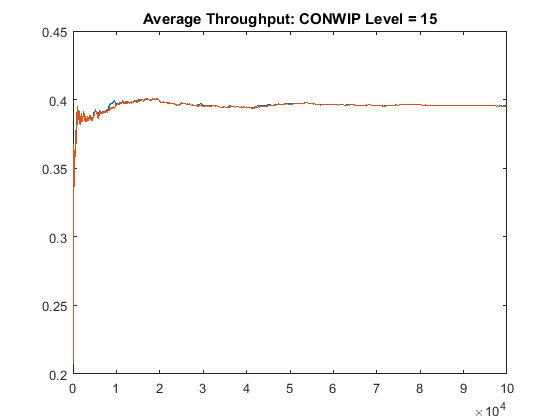
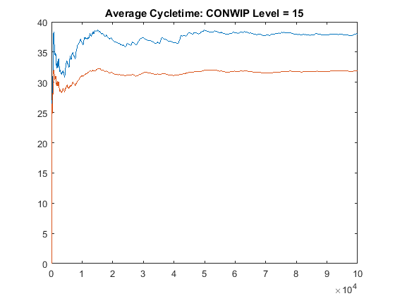
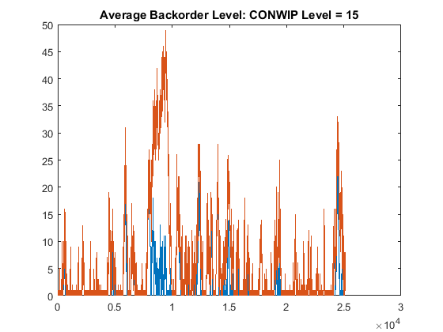
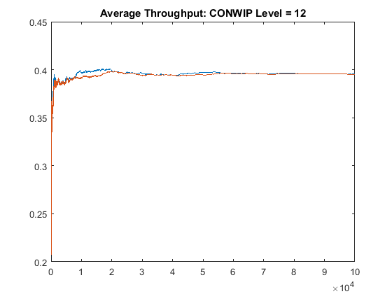
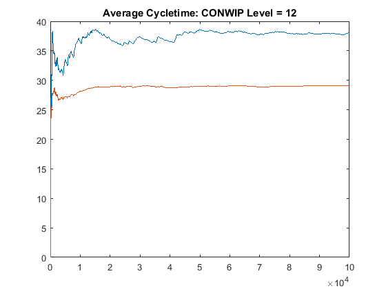
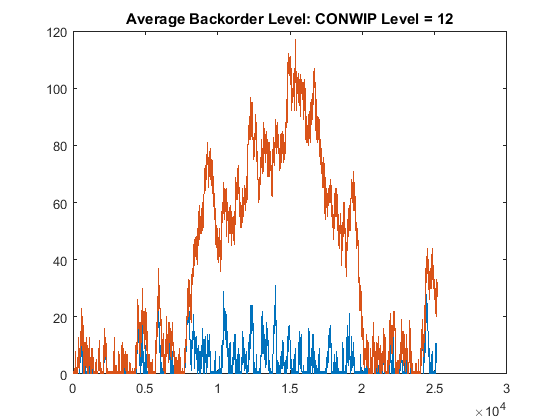
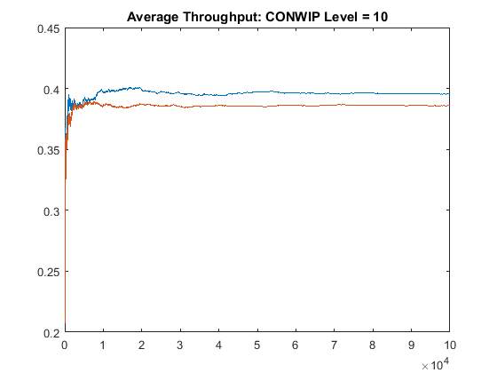
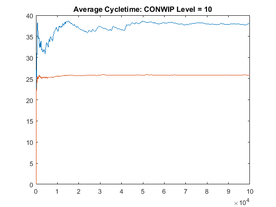
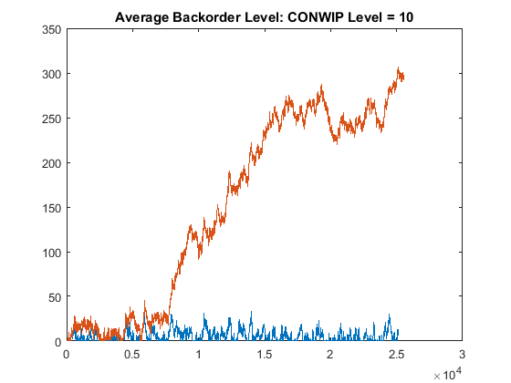

Push Vs CONWIP Demonstration with Common Random Numbers
This demonstration is intended to highlight the differences in the transient behavior of the Push vs CONWIP systems. Much of the previous discussion has examined the steady-state, long-run performance of these two types of systems, where the CONWIP system exhibits lower average cycle-times due to the constant WIP level.
This demonstration will focus on the back-order level of each system, and how each system recovers from periods of instability; e.g. a period of long processing times coupled with a period of short interarrival times. To establish a simple but effective demonstration, each workstation is a M/M/1 queue/server with a processing time of 2 and the interarrival times to the system is 2.5, or the arrival rate is 0.4 while the bottleneck rate is 0.5. Therefore the system is stable in the long-run, but due to the randomness of both the arrivals and processing times, it may become temporarily unstable.
Contents
Baseline System with CONWIP Level = 15
The first use case sets the CONWIP level at 15, while the critical wip for the system is somewhere around 12. Therefore, the system should perform at its maximum capacity.
  Observations:
- Throughput is the same: Good
- Cycletime for CONWIP system is lower: Good
- Average Backorder Level: Both systems manage Backorder levels well, though the CONWIP takes longer to recover from some backorders around t=0.75e4.
Reduce the CONWIP level to 12
The second use case sets the CONWIP level around the critical WIP level for this system.
  Observations:
- Throughput is the same: Good
- Cycletime for CONWIP system is lower: Good
- Average Backorder Level: The CONWIP system struggles to recover, but manages to get the backorers to zero.
Reduce the CONWIP level to 10
In this last use case, the CONWIP level is set below the critical WIP level for this system. Therefore, the maximum throughput of the CONWIP system is less than its maximum, and the system is actually unstable. We expect the backorders to run-away towards infinity. This use case is intended to highlight the perils of selecting the wrong CONWIP level for a system.
  Observations:
- Throughput for the CONWIP system is lower than the Push system: so it's not really a fair comparison anymore
- Cycletime for CONWIP system is lower: Good
- Average Backorder Level: The CONWIP system never recovers.